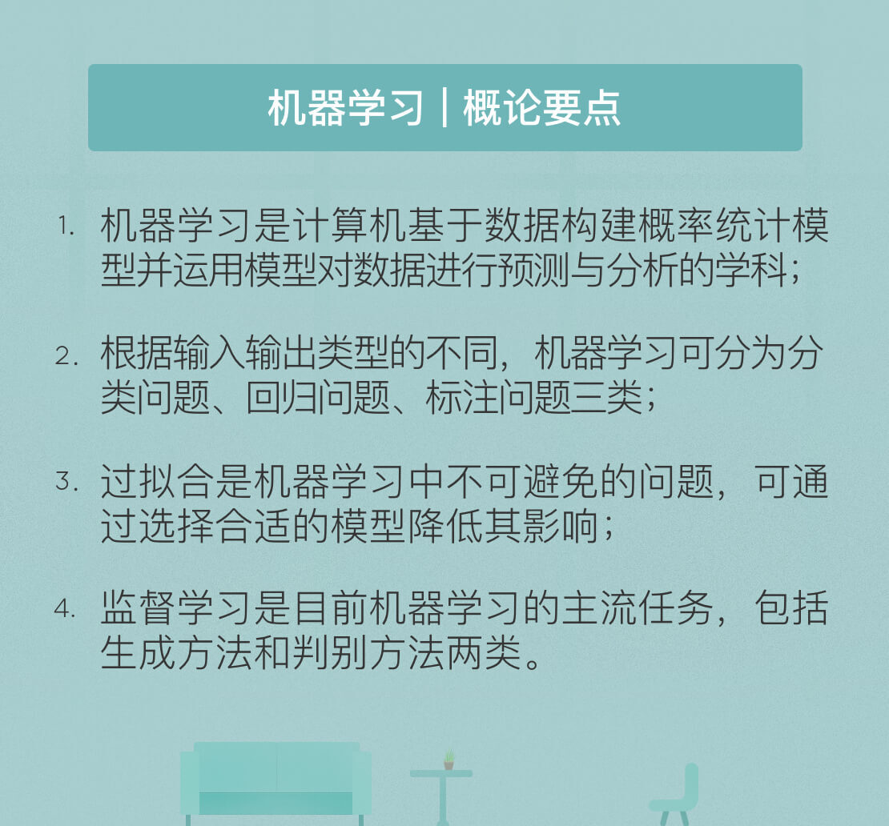

- 00 开篇词 人工智能：新时代的必修课.md.html
- 01 数学基础 九层之台，起于累土：线性代数.md.html
- 02 数学基础 月有阴晴圆缺，此事古难全：概率论.md.html
- 03 数学基础 窥一斑而知全豹：数理统计.md.html
- 04 数学基础 不畏浮云遮望眼：最优化方法.md.html
- 05 数学基础 万物皆数，信息亦然：信息论.md.html
- 06 数学基础 明日黄花迹难寻：形式逻辑.md.html
- 07 机器学习 数山有路，学海无涯：机器学习概论.md.html
- 08 机器学习 简约而不简单：线性回归.md.html
- 09 机器学习 大道至简：朴素贝叶斯方法.md.html
- 10 机器学习 衍化至繁：逻辑回归.md.html
- 11 机器学习 步步为营，有章可循：决策树.md.html
- 12 机器学习 穷则变，变则通：支持向量机.md.html
- 13 机器学习 三个臭皮匠，赛过诸葛亮：集成学习.md.html
- 14 机器学习 物以类聚，人以群分：聚类分析.md.html
- 15 机器学习 好钢用在刀刃上：降维学习.md.html
- 16 人工神经网络 道法自然，久藏玄冥：神经网络的生理学背景.md.html
- 17 人工神经网络 一个青年才俊的意外死亡：神经元与感知器.md.html
- 18 人工神经网络 左手信号，右手误差：多层感知器.md.html
- 19 人工神经网络 各人自扫门前雪：径向基函数神经网络.md.html
- 20 人工神经网络 看不见的手：自组织特征映射.md.html
- 21 人工神经网络 水无至清，人莫至察：模糊神经网络.md.html
- 22 深度学习 空山鸣响，静水流深：深度学习概述.md.html
- 23 深度学习 前方有路，未来可期：深度前馈网络.md.html
- 24 深度学习 小树不修不直溜：深度学习中的正则化.md.html
- 25 深度学习 玉不琢不成器：深度学习中的优化.md.html
- 26 深度学习 空竹里的秘密：自编码器.md.html
- 27 深度学习 困知勉行者勇：深度强化学习.md.html
- 28 深度学习框架下的神经网络 枯木逢春：深度信念网络.md.html
- 29 深度学习框架下的神经网络 见微知著：卷积神经网络.md.html
- 30 深度学习框架下的神经网络 昨日重现：循环神经网络.md.html
- 31 深度学习框架下的神经网络 左右互搏：生成式对抗网络.md.html
- 32 深度学习框架下的神经网络 三重门：长短期记忆网络.md.html
- 33 深度学习之外的人工智能 一图胜千言：概率图模型.md.html
- 34 深度学习之外的人工智能 乌合之众的逆袭：集群智能.md.html
- 35 深度学习之外的人工智能 授人以鱼不如授人以渔：迁移学习.md.html
- 36 深度学习之外的人工智能 滴水藏海：知识图谱.md.html
- 37 应用场景 你是我的眼：计算机视觉.md.html
- 38 应用场景 嘿, Siri：语音处理.md.html
- 39 应用场景 心有灵犀一点通：对话系统.md.html
- 40 应用场景 数字巴别塔：机器翻译.md.html
- 一键到达 人工神经网络复习课.md.html
- 一键到达 应用场景复习课.md.html
- 一键到达 数学基础复习课.md.html
- 一键到达 机器学习复习课.md.html
- 一键到达 深度学习之外的人工智能复习课.md.html
- 一键到达 深度学习复习课.md.html
- 一键到达 深度学习框架下的神经网络复习课.md.html
- 推荐阅读 我与人工智能的故事.md.html
- 新书 《裂变：秒懂人工智能的基础课》.md.html
- 直播回顾 机器学习必备的数学基础.md.html
- 第2季回归 这次我们来聊聊机器学习.md.html
- 结课 溯洄从之，道阻且长.md.html
- 课外谈 “人工智能基础课”之二三闲话.md.html
- （课外辅导）人工神经网络 拓展阅读参考书.md.html
- （课外辅导）数学基础 拓展阅读参考书.md.html
- （课外辅导）机器学习 拓展阅读参考书.md.html
- （课外辅导）深度学习 拓展阅读参考书.md.html
- 捐赠
07 机器学习 数山有路，学海无涯：机器学习概论
不知道你在生活中是否留意过这样的现象：我们可以根据相貌轻易区分出日本人、韩国人和泰国人，却对英国人、俄罗斯人和德国人脸盲。造成这种现象的原因一方面在于日韩泰都是我国的邻国，观察这些国家普通人的机会较多；另一方面，抛开衣妆的因素不论，相同的人种也使得面貌特征更加容易进行比较和辨别。
因此，根据大量的观察就能总结出不同国别的相貌特点：中国人下颌适中，日本人长脸长鼻，韩国人眼小颧高，泰国人肤色暗深。在做出路人甲来自日本或是路人乙来自韩国的判断时，正是以这些特征作为依据的。
上面的例子就是简化版的人类学习机制：从大量现象中提取反复出现的规律与模式。这一过程在人工智能中的实现就是机器学习。
从形式化角度定义，如果算法利用某些经验使自身在特定任务类上的性能得到改善，就可以说该算法实现了机器学习。而从方法论的角度看，机器学习是计算机基于数据构建概率统计模型并运用模型对数据进行预测与分析的学科。
机器学习可说是从数据中来，到数据中去。假设已有数据具有一定的统计特性，则不同的数据可以视为满足独立同分布的样本。机器学习要做的就是根据已有的训练数据推导出描述所有数据的模型，并根据得出的模型实现对未知的测试数据的最优预测。
在机器学习中，数据并非通常意义上的数量值，而是对于对象某些性质的描述。被描述的性质叫作属性，属性的取值称为属性值，不同的属性值有序排列得到的向量就是数据，也叫实例。
在文首的例子中，黄种人相貌特征的典型属性便包括肤色、眼睛大小、鼻子长短、颧骨高度。标准的中国人实例甲就是属性值{浅、大、短、低 }的组合，标准的韩国人实例乙则是属性值{浅、小、长、高}的组合。
根据线性代数的知识，数据的不同属性之间可以视为相互独立，因而每个属性都代表了一个不同的维度，这些维度共同张成了特征空间。
每一组属性值的集合都是这个空间中的一个点，因而每个实例都可以视为特征空间中的一个向量，即特征向量。
需要注意的是这里的特征向量不是和特征值对应的那个概念，而是指特征空间中的向量。根据特征向量对输入数据进行分类就能够得到输出。
在前面的例子中，输入数据是一个人的相貌特征，输出数据就是中国人/日本人/韩国人/泰国人四中选一。而在实际的机器学习任务中，输出的形式可能更加复杂。根据输入输出类型的不同，预测问题可以分为以下三类。
- 分类问题：输出变量为有限个离散变量，当个数为2时即为最简单的二分类问题；
- 回归问题：输入变量和输出变量均为连续变量；
- 标注问题：输入变量和输出变量均为变量序列。
但在实际生活中，每个国家的人都不是同一个模子刻出来的，其长相自然也会千差万别，因而一个浓眉大眼的韩国人可能被误认为中国人，一个肤色较深的日本人也可能被误认为泰国人。
同样的问题在机器学习中也会存在。一个算法既不可能和所有训练数据符合得分毫不差，也不可能对所有测试数据预测得精确无误。因而误差性能就成为机器学习的重要指标之一。
在机器学习中，误差被定义为学习器的实际预测输出与样本真实输出之间的差异。在分类问题中，常用的误差函数是错误率，即分类错误的样本占全部样本的比例。
误差可以进一步分为训练误差和测试误差两类。训练误差指的是学习器在训练数据集上的误差，也称经验误差；测试误差指的是学习器在新样本上的误差，也称泛化误差。
训练误差描述的是输入属性与输出分类之间的相关性，能够判定给定的问题是不是一个容易学习的问题。测试误差则反映了学习器对未知的测试数据集的预测能力，是机器学习中的重要概念。实用的学习器都是测试误差较低，即在新样本上表现较好的学习器。
学习器依赖已知数据对真实情况进行拟合，即由学习器得到的模型要尽可能逼近真实模型，因此要在训练数据集中尽可能提取出适用于所有未知数据的普适规律。
然而，一旦过于看重训练误差，一味追求预测规律与训练数据的符合程度，就会把训练样本自身的一些非普适特性误认为所有数据的普遍性质，从而导致学习器泛化能力的下降。
在前面的例子中，如果接触的外国人较少，从没见过双眼皮的韩国人，思维中就难免出现“单眼皮都是韩国人”的错误定式，这就是典型的过拟合现象，把训练数据的特征错当做整体的特征。
过拟合出现的原因通常是学习时模型包含的参数过多，从而导致训练误差较低但测试误差较高。
与过拟合对应的是欠拟合。如果说造成过拟合的原因是学习能力太强，造成欠拟合的原因就是学习能力太弱，以致于训练数据的基本性质都没能学到。如果学习器的能力不足，甚至会把黑猩猩的图像误认为人，这就是欠拟合的后果。
在实际的机器学习中，欠拟合可以通过改进学习器的算法克服，但过拟合却无法避免，只能尽量降低其影响。由于训练样本的数量有限，因而具有有限个参数的模型就足以将所有训练样本纳入其中。
可模型的参数越多，能与这个模型精确相符的数据也就越少，将这样的模型运用到无穷的未知数据当中，过拟合的出现便不可避免。更何况训练样本本身还可能包含一些噪声，这些随机的噪声又会给模型的精确性带来额外的误差。
整体来说，测试误差与模型复杂度之间呈现的是抛物线的关系。当模型复杂度较低时，测试误差较高；随着模型复杂度的增加，测试误差将逐渐下降并达到最小值；之后当模型复杂度继续上升时，测试误差会随之增加，对应着过拟合的发生。
在模型选择中，为了对测试误差做出更加精确的估计，一种广泛使用的方法是交叉验证。交叉验证思想在于重复利用有限的训练样本，通过将数据切分成若干子集，让不同的子集分别组成训练集与测试集，并在此基础上反复进行训练、测试和模型选择，达到最优效果。
如果将训练数据集分成10个子集\(D_{1-10}\)进行交叉验证，则需要对每个模型进行10轮训练，其中第1轮使用的训练集为\(D_2\)\(D_{10}\)这9个子集，训练出的学习器在子集\(D_1\)上进行测试；第2轮使用的训练集为\(D_1\)和\(D_3\)\(D_{10}\)这9个子集，训练出的学习器在子集\(D_2\)上进行测试。依此类推，当模型在10个子集全部完成测试后，其性能就是10次测试结果的均值。不同模型中平均测试误差最小的模型也就是最优模型。
除了算法本身，参数的取值也是影响模型性能的重要因素，同样的学习算法在不同的参数配置下，得到的模型性能会出现显著的差异。因此，调参，也就是对算法参数进行设定，是机器学习中重要的工程问题，这一点在今天的神经网络与深度学习中体现得尤为明显。
假设一个神经网络中包含1000个参数，每个参数又有10种可能的取值，对于每一组训练/测试集就有\(1000 ^ {10}\)个模型需要考察，因而在调参过程中，一个主要的问题就是性能和效率之间的折中。
在人类的学习中，有的人可能有高人指点，有的人则是无师自通。在机器学习中也有类似的分类。根据训练数据是否具有标签信息，可以将机器学习的任务分成以下三类。
- 监督学习：基于已知类别的训练数据进行学习；
- 无监督学习：基于未知类别的训练数据进行学习；
- 半监督学习：同时使用已知类别和未知类别的训练数据进行学习。
受学习方式的影响，效果较好的学习算法执行的都是监督学习的任务。即使号称自学成才、完全脱离了对棋谱依赖的AlphaGo Zero，其训练过程也要受围棋胜负规则的限制，因而也脱不开监督学习的范畴。
监督学习假定训练数据满足独立同分布的条件，并根据训练数据学习出一个由输入到输出的映射模型。反映这一映射关系的模型可能有无数种，所有模型共同构成了假设空间。监督学习的任务就是在假设空间中根据特定的误差准则找到最优的模型。
根据学习方法的不同，监督学习可以分为生成方法与判别方法两类。
生成方法是根据输入数据和输出数据之间的联合概率分布确定条件概率分布\(P(Y|X)\)，这种方法表示了输入X与输出Y之间的生成关系；判别方法则直接学习条件概率分布\(P(Y|X)\)或决策函数\(f(X)\)，这种方法表示了根据输入X得出输出Y的预测方法。
两相对比，生成方法具有更快的收敛速度和更广的应用范围，判别方法则具有更高的准确率和更简单的使用方式。
今天我和你分享了机器学习的基本原理与基础概念，其要点如下：
- 机器学习是计算机基于数据构建概率统计模型并运用模型对数据进行预测与分析的学科；
- 根据输入输出类型的不同，机器学习可分为分类问题、回归问题、标注问题三类；
- 过拟合是机器学习中不可避免的问题，可通过选择合适的模型降低其影响；
- 监督学习是目前机器学习的主流任务，包括生成方法和判别方法两类。
在图像识别领域中，高识别率的背后是大量被精细标记的图像样本，而对数以百万计的数字图像进行标记无疑需要耗费大量人力。借鉴近期AlphaGo Zero的成功经验，如何降低机器学习中的人工干预程度，同时提升算法效率呢？
欢迎发表你的观点。

© 2019 - 2023 Liangliang Lee. Powered by gin and hexo-theme-book.